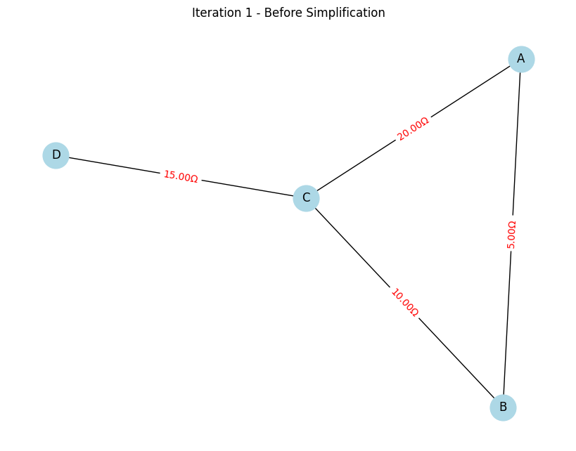
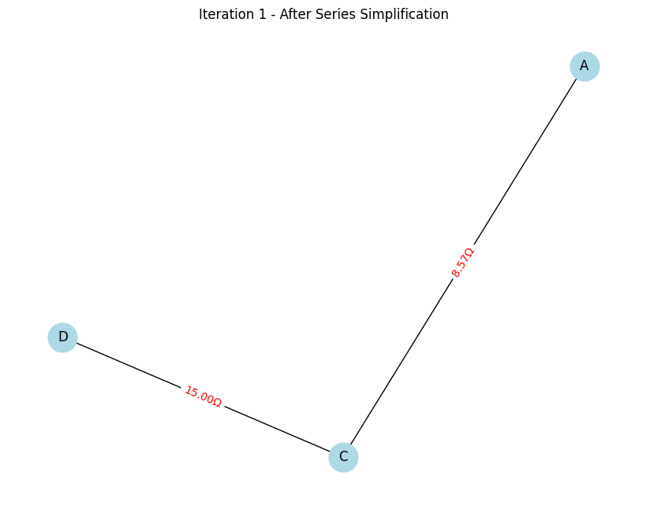
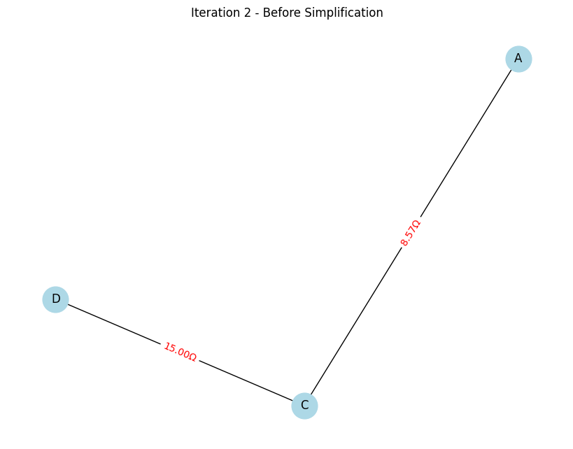
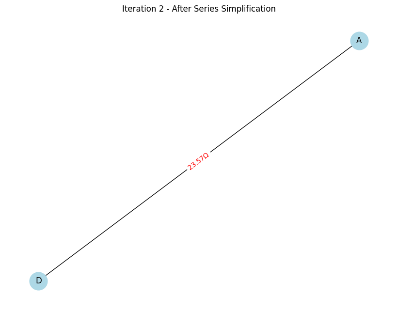

Problem 1
Equivalent Resistance Using Graph Theory
1. Introduction and Background
Electrical circuits can often be simplified by combining resistors in series and parallel. When circuits become complex with multiple loops and junctions, manual simplification becomes tedious and error-prone. Representing the circuit as a graph helps us automate this process.
- Nodes (Vertices): Represent connection points (junctions) in the circuit.
- Edges: Represent resistors between nodes, weighted by their resistance value.
2. How to Identify Series and Parallel in a Graph?
Parallel Edges
- When multiple edges connect the same pair of nodes, they represent resistors in parallel.
- Their equivalent resistance \(R_{eq}\) is calculated as:
Series Edges
- If a node (except start/end terminals) connects exactly two edges, these two resistors are in series.
- Node degree = 2 means exactly two neighbors.
- Equivalent resistance of series resistors is the sum:
- After combining, the node is removed, and the two edges are replaced by a single edge.
Nested and Complex Configurations
- Circuits often have series inside parallel or vice versa.
- The algorithm repeatedly detects and reduces series and parallel edges until the entire graph is reduced to one edge between the two terminals.
3. Detailed Algorithm Steps
-
Input:
-
A weighted undirected graph \(G\) representing the circuit.
-
Two special nodes,
startandend. -
Loop until only one edge between start and end remains:
a. Simplify Parallel Edges:
- Find all edges connecting the same node pairs.
- Compute their parallel equivalent resistance.
- Replace them with a single edge.
b. Simplify Series Edges:
- Find nodes (excluding start/end) with degree 2.
- Combine the two edges connected to that node in series.
- Remove that node.
-
If an edge already exists between the two neighbors, combine with it in parallel.
-
Return the resistance of the remaining edge.
4. Why this Approach?
- Systematic and automatable: Perfect for coding.
- Handles arbitrary graphs: Works for any circuit configuration.
- Visualizable: You can plot each step, showing the simplifications.
5. Python Code Implementation
The code below:
- Uses
networkxto represent the circuit graph. - Detects and simplifies series and parallel edges iteratively.
- Uses
matplotlibto plot the graph after each simplification step. - Runs in Google Colab with inline plots.
Installation (for Google Colab)
!pip install networkx matplotlib
Code
import networkx as nx
import matplotlib.pyplot as plt
def plot_circuit(G, title="Circuit Graph", node_pos=None):
plt.figure(figsize=(8,6))
if not node_pos:
node_pos = nx.spring_layout(G, seed=42)
edge_labels = {(u, v): f"{d['resistance']:.2f}Ω" for u, v, d in G.edges(data=True)}
nx.draw(G, pos=node_pos, with_labels=True, node_size=700, node_color='lightblue')
nx.draw_networkx_edge_labels(G, pos=node_pos, edge_labels=edge_labels, font_color='red')
plt.title(title)
plt.show()
return node_pos
def simplify_parallel(G):
"""
Simplify all parallel edges by merging multiple edges between same nodes.
"""
removed_any = False
# NetworkX MultiGraph allows multiple edges; convert to simple Graph for parallel detection
# We'll create a new graph with combined edges
# Collect edges by node pairs
edge_dict = {}
for u, v, data in G.edges(data=True):
key = tuple(sorted([u,v]))
edge_dict.setdefault(key, []).append(data['resistance'])
# Rebuild graph with parallel edges merged
newG = nx.Graph()
newG.add_nodes_from(G.nodes())
for (u,v), resistances in edge_dict.items():
if len(resistances) > 1:
# Calculate equivalent parallel resistance
inv_sum = sum(1/r for r in resistances)
Req = 1/inv_sum if inv_sum != 0 else float('inf')
removed_any = True
newG.add_edge(u,v, resistance=Req)
else:
newG.add_edge(u,v, resistance=resistances[0])
return newG, removed_any
def simplify_series(G, start, end):
"""
Simplify nodes of degree 2 that are not start or end nodes (series resistors).
"""
removed_any = False
nodes_to_remove = []
for node in list(G.nodes):
if node == start or node == end:
continue
if G.degree[node] == 2:
neighbors = list(G.neighbors(node))
u, w = neighbors[0], neighbors[1]
R1 = G.edges[u, node]['resistance']
R2 = G.edges[node, w]['resistance']
Req = R1 + R2
# Remove node and its edges
G.remove_node(node)
# If edge u-w exists, combine in parallel
if G.has_edge(u, w):
R_existing = G.edges[u, w]['resistance']
inv_sum = 1/Req + 1/R_existing
Req_parallel = 1/inv_sum
G.edges[u, w]['resistance'] = Req_parallel
else:
G.add_edge(u, w, resistance=Req)
removed_any = True
# Node removed, so continue iteration
break
return G, removed_any
def equivalent_resistance(G, start, end):
"""
Iteratively simplify the graph until only one edge remains between start and end.
"""
iteration = 0
pos = None # for consistent plotting positions
while True:
iteration += 1
print(f"Iteration {iteration}:")
plot_title = f"Iteration {iteration} - Before Simplification"
pos = plot_circuit(G, plot_title, node_pos=pos)
# Simplify parallel edges
G, changed_parallel = simplify_parallel(G)
if changed_parallel:
plot_circuit(G, f"Iteration {iteration} - After Parallel Simplification", node_pos=pos)
# Simplify series edges
G, changed_series = simplify_series(G, start, end)
if changed_series:
plot_circuit(G, f"Iteration {iteration} - After Series Simplification", node_pos=pos)
# Check if reduced to single edge between start and end
if G.number_of_edges() == 1 and G.has_edge(start, end):
print("Circuit reduced to single equivalent resistor.")
break
# If no changes, stop to prevent infinite loop
if not changed_parallel and not changed_series:
print("No further simplifications possible.")
break
Req_final = G.edges[start, end]['resistance'] if G.has_edge(start, end) else None
print(f"Equivalent Resistance between {start} and {end}: {Req_final:.4f} Ω")
return Req_final
# Example circuit setup
def example_circuit():
G = nx.Graph()
# Add nodes
G.add_nodes_from(['A', 'B', 'C', 'D'])
# Add edges with resistances (Ohms)
# Example: A-B (5Ω), B-C (10Ω), A-C (20Ω), C-D (15Ω)
G.add_edge('A', 'B', resistance=5)
G.add_edge('B', 'C', resistance=10)
G.add_edge('A', 'C', resistance=20)
G.add_edge('C', 'D', resistance=15)
return G
# Run in Google Colab
if __name__ == "__main__":
circuit_graph = example_circuit()
start_node = 'A'
end_node = 'D'
equivalent_resistance(circuit_graph, start_node, end_node)




6. How to Use This in Google Colab?
- Copy and paste the code into a notebook cell.
- Run the cell to install dependencies if necessary.
- Run the code — it will plot the circuit graph and its simplifications step-by-step.
- It prints the final equivalent resistance.
7. Explanation of the Example Circuit
- Nodes: A, B, C, D.
-
Edges/resistors:
-
A-B = 5 Ω
- B-C = 10 Ω
- A-C = 20 Ω (parallel to series of A-B-C)
- C-D = 15 Ω (series with the combined network between A and C)
Stepwise simplification will:
- First combine A-B and B-C (series 5 + 10 = 15 Ω),
- Then combine parallel edges between A-C (20 Ω) and combined (15 Ω),
- Finally add series C-D (15 Ω).
The code plots each step and prints final equivalent resistance between A and D.
8. Additional Notes
- The current implementation assumes simple graphs (no multiple edges at the same time). It detects parallel edges by grouping edges between same nodes.
- You can customize the circuit by adding/removing nodes or edges with different resistances.
- For very complex circuits, the algorithm still works as long as it can detect series and parallel resistors.